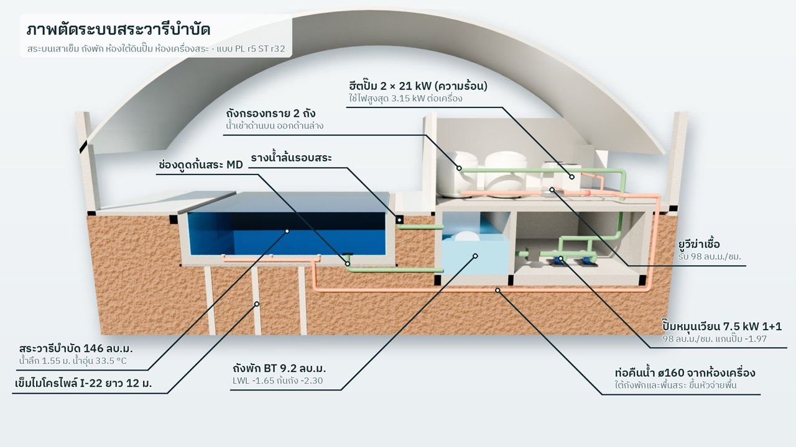

สระ 7.00 × 13.50 ม. น้ำลึก 1.55 ม. รางน้ำล้นรอบสระ น้ำหมุนเวียนต่อเนื่องผ่านถังกรอง ยูวี และฮีตปั๊ม เลือกโหมดในแผนผังเพื่อดูทิศการไหลของแต่ละสถานการณ์

ทุก 1.5 ชั่วโมง น้ำทั้งสระ 146 ลบ.ม. ผ่านเส้นทางนี้ครบ 1 รอบ ด้วยอัตรา 98 ลบ.ม./ชม. (27 ล./วินาที)
ผิวน้ำที่มีไขมันและฝุ่นไหลข้ามขอบลงรางรอบสระ ส่วนน้ำก้นสระถูกดูดผ่าน MD 2 จุด ทั้งหมดไหลด้วยแรงโน้มถ่วงลงถังพัก
ราง 2 × 4" · MD 2 × 4"รับน้ำที่ล้นเมื่อมีคนลงสระ และเป็นจุดเติมน้ำประปา ระดับน้ำในถังขึ้นลงตามจำนวนผู้ใช้
9.2 ลบ.ม. · รับคนลงสระพร้อมกัน 20 คนปั๊มหอยโข่ง LEO XST65-125/75 7.5 kW ตั้งในห้องใต้ดินปั๊ม 4.50 × 2.70 ม. พื้น -2.30 ใต้ห้องเครื่อง ใช้ผนังร่วมกับถังพัก แกนปั๊ม -1.97 ต่ำกว่าระดับน้ำต่ำสุดในถังพัก (-1.65) 0.32 ม. น้ำจึงไหลเข้าปั๊มเองโดยไม่ต้องล่อน้ำ ช่างลงด้วยบันไดเหล็กชัน มีที่ยืนซ่อม 0.78 ถึง 1.30 ม. รอบปั๊ม ยกปั๊มออกด้วยรางรอก ตะแกรงดักผมกันเศษเข้าปั๊ม ปั๊มทำงานสลับ 1 ตัว สำรอง 1 ตัว VSD ABB ACQ580 ปรับรอบและตัดเมื่อทำงานแห้ง
ดูด ø200 1.3 ม./วินาที · ส่ง ø160 2.0 ม./วินาทีน้ำไหลจากบนลงล่างผ่านชั้นทราย ตะกอนติดค้างในทราย เมื่อแรงดันตกคร่อมสูงขึ้นให้ล้างย้อน
พื้นที่กรอง 4.02 ตร.ม. · 24.4 ม./ชม. (ไม่เกิน 30)ยูวีฆ่าเชื้อในท่อ ส่วนชุด CD วัดค่าคลอรีนและ pH ในน้ำ แล้วเติมสารอัตโนมัติเพื่อคงคลอรีนคงเหลือในสระ
วัด Cl pH ORP · เติมเข้าท่อคืนน้ำฮีตปั๊มเติมพลังงานชดเชยความร้อนที่สระเสียให้อากาศ น้ำอุ่นกลับเข้าทางพื้นสระ 8 จุด ผสมทั่วสระจากล่างขึ้นบน
2 × 21 kW · ผ่านเครื่อง 18 ลบ.ม./ชม. อุ่นขึ้น 2.0 °C · ผสมกลับสระ +0.37 °Cน้ำเย็นลงเล็กน้อยที่รางล้นและถังพักเพราะสัมผัสอากาศ ผ่านปั๊มและถังกรองแทบไม่เปลี่ยน แล้วอุ่นขึ้นที่ฮีตปั๊ม ความต่างอุณหภูมิในท่อหลักไม่ถึง 0.5 °C ท่อแยกที่ผ่านฮีตปั๊มอุ่นขึ้นราว 2 °C เพราะน้ำไหลเร็ว 27 ล./วินาที ระบบรักษาอุณหภูมิด้วยการหมุนเวียนต่อเนื่อง ไม่ได้ต้มน้ำให้ร้อนจัด
หลังเติมน้ำใหม่ น้ำประปาเย็นกว่าที่ต้องการ ฮีตปั๊มใช้เวลาหลายวันอุ่นทั้งสระ เมื่อถึง 33.5 °C เทอร์โมสตัทตัดและเปิดสลับเพื่อชดเชยความร้อนที่เสียไป ปรับค่าด้านขวาเพื่อดูผล
แบบจำลองอย่างง่ายตามแบบ PL r5: ความร้อนที่สระเสีย 23.6 kW ที่น้ำ 33.5 °C อากาศ 27 °C (สัมประสิทธิ์ 3.63 kW/°C) ความจุความร้อนน้ำ 146 ลบ.ม. = 170 kWh/°C ใช้ประกอบการตรวจแนวคิดเท่านั้น ค่าออกแบบจริงอยู่ในรายการคำนวณระบบสระ